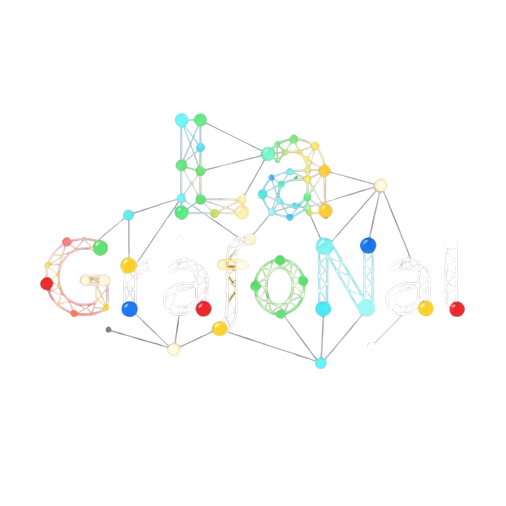

Grafo
Un grafo se describe como un par ordenado $G=(V,E)$, donde $V$ es el conjunto de vertices y $E$ es el conjunto de aristas que unen pares de vertices.
$$G=(V,E)$$

Una forma de estudiar grafos que combina definiciones, ecuaciones y visualizaciones interactivas. La teoria queda conectada con el laboratorio para que cada concepto se vea, se pruebe y se entienda con rapidez.
Los contenidos del capitulo de grafos y arboles estan reorganizados para que las definiciones se lean mejor y las expresiones matematicas aparezcan como bloques, no como texto plano.
Un grafo se describe como un par ordenado $G=(V,E)$, donde $V$ es el conjunto de vertices y $E$ es el conjunto de aristas que unen pares de vertices.
Cuando cada arista tiene orientacion, el objeto se interpreta como un digrafo. En ese caso, las aristas se leen como pares ordenados y se distingue el sentido de recorrido.
Si un grafo conserva solo una parte de sus vertices y aristas, obtenemos un subgrafo. Formalmente, $H=(W,F)$ con $W\subseteq V$ y $F\subseteq E$.
Para cada vertice se guarda la lista de vertices con los que comparte una arista. Es una representacion compacta y muy util cuando el grafo es disperso.
A: [B, C]
La informacion se organiza en una tabla cuadrada donde la entrada $(i,j)$ indica si existe o no una arista entre esos vertices.
Relaciona vertices con aristas y marca cuando un vertice es extremo de una arista. Es especialmente util para seguir la estructura del grafo sin perder las conexiones individuales.
El grado cuenta cuantas aristas inciden en un vertice. En grafos dirigidos se diferencia entre grado de entrada y grado de salida.
Un camino es una sucesion de vertices conectados uno tras otro. Si el recorrido regresa al vertice inicial, la secuencia se convierte en un ciclo.
Un grafo es conexo cuando cualquier par de vertices puede enlazarse por un camino. Si no ocurre, el grafo se separa en componentes conexas.
Todo par de vertices esta unido por una arista. En un grafo completo con n vertices, la cantidad de aristas se obtiene directamente de la combinacion de pares.
Los vertices se dividen en dos conjuntos y toda arista une un vertice de un conjunto con uno del otro. No aparecen aristas dentro del mismo conjunto.
Puede dibujarse en el plano sin cruces entre aristas. Esa propiedad permite estudiar caras, regiones y relaciones topologicas del dibujo.
Un arbol es un grafo conexo sin ciclos. Si tiene n vertices, entonces presenta exactamente n-1 aristas.
Un bosque es una coleccion de arboles desconectados entre si. Cada componente del bosque es un arbol por separado.
Si de un grafo conexo se conserva la conectividad usando la menor cantidad posible de aristas, se obtiene un arbol generador o spanning tree.
Asignamos colores a los vertices de forma que dos vertices adyacentes nunca compartan color.
Es la menor cantidad de colores necesarios para lograr una coloracion propia. Se representa con $\chi(G)$.
Recorre los vertices y asigna siempre el primer color disponible. No siempre alcanza el numero cromatico, pero es una forma practica de visualizar el proceso.
Edita el grafo con el mouse o el dedo. Cambia al modo Algoritmos para correr BFS, DFS, componentes conexas o coloreo sobre lo que construiste.
Un cuestionario corto y dos retos practicos que se verifican directamente sobre el grafo que construiste en el laboratorio.
Ve al laboratorio, borra el grafo actual y construye uno que creas que es bipartito (minimo 4 vertices). Vuelve aqui y verifica.
Usa el grafo que tengas actualmente en el laboratorio (puede ser cualquiera) y verifica cuantas componentes conexas tiene.